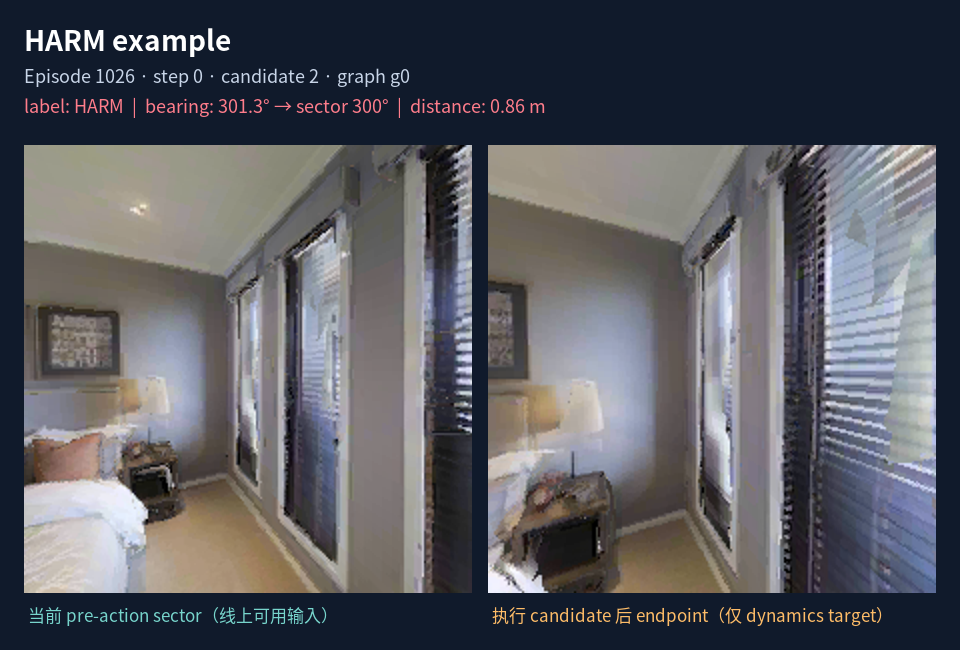
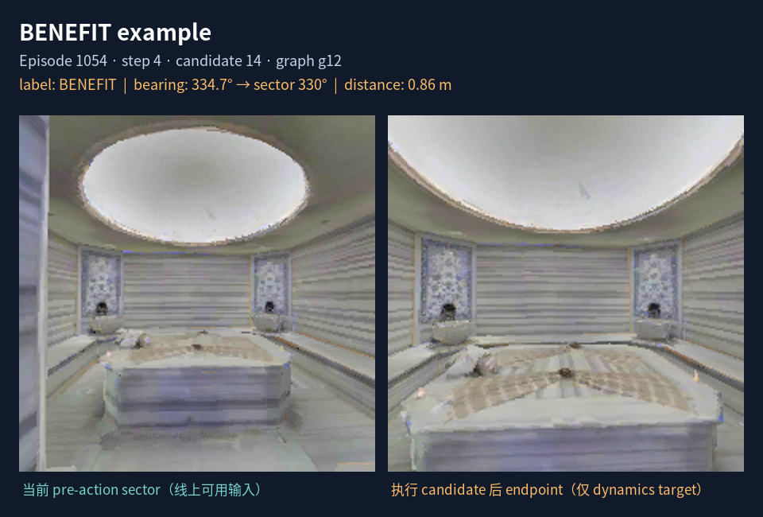
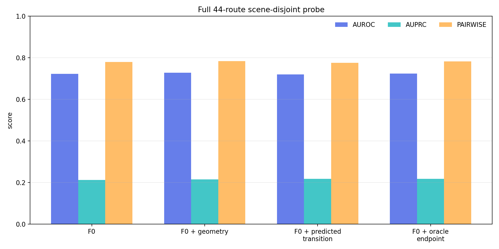
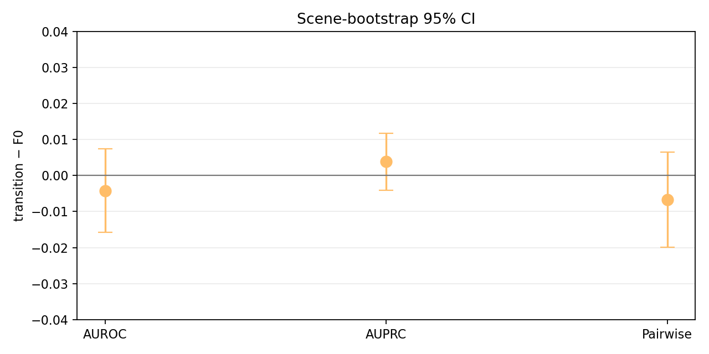

这页展示的是“做了什么”，不是在线导航录像。原始 ETPNav policy、Graph Transformer、controller 和 STOP 都没有改变。
Endpoint 图像只用于训练 dynamics target，不能作为线上输入。右侧案例中的 endpoint 是“如果执行该 action 后看到的图像”，不是模型事先看到的输入。
4,251 个 exact endpoint branches · 373 states · 44 episodes · 11 scenes · 3,877 个 causal alternatives。
BENEFIT: 430，HARM: 3,447；所有 native selected sentinel 373/373 精确通过。


左图是 action 执行前对应 bearing 的当前 sector；右图是 exact replay 后的 endpoint RGB。它们用于说明 transition target 的含义。正式 value probe 不会读取右图。

| 模型 | AUROC | AUPRC | within-state pairwise |
|---|---|---|---|
| F0 | 0.722 | 0.213 | 0.779 |
| F0 + geometry | 0.727 | 0.215 | 0.783 |
| F0 + predicted transition | 0.719 | 0.218 | 0.774 |
| F0 + oracle endpoint | 0.723 | 0.218 | 0.781 |

横线穿过 0 表示 scene-bootstrap 没有证明 transition 分支稳定优于 F0。
当前一步 endpoint RGB latent transition 没有通过 GO gate。 它没有稳定提供 native ETPNav 之外的 waypoint value signal。下一步若继续，应预测 instruction-conditioned traversability 或 graph/history transition state，而不是继续生成未来 RGB。